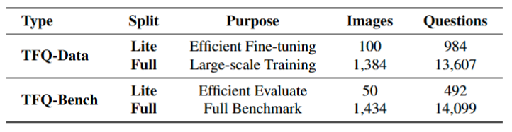
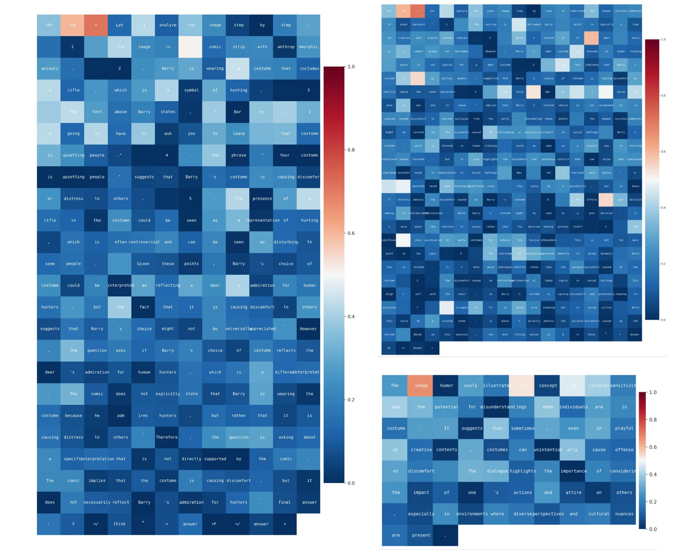
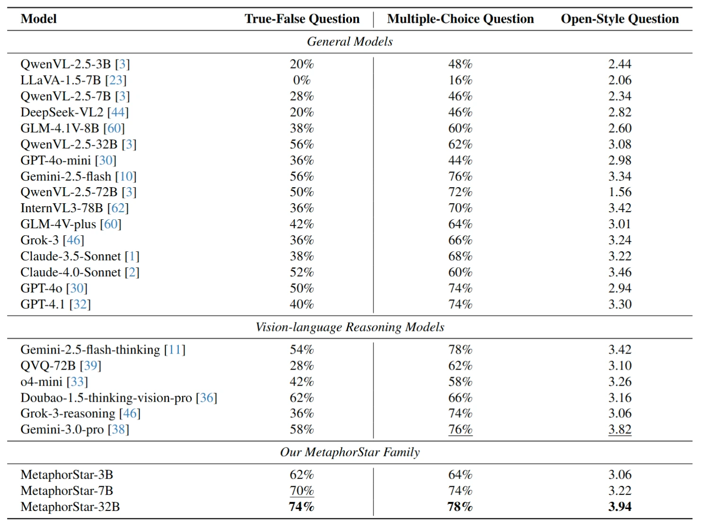
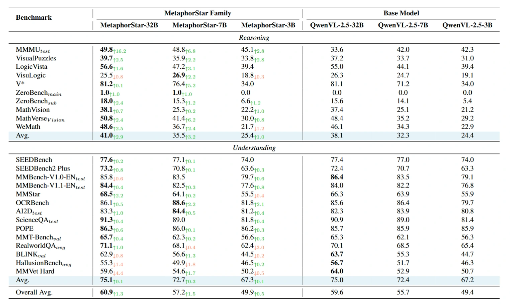
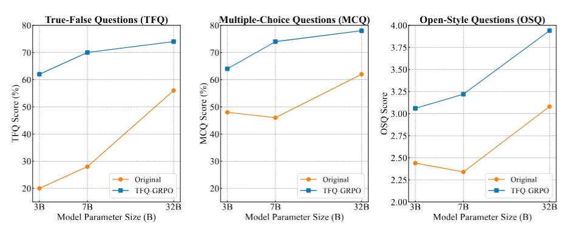
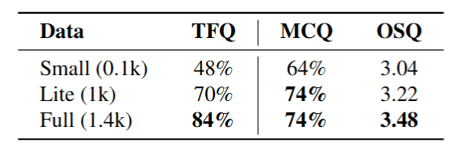
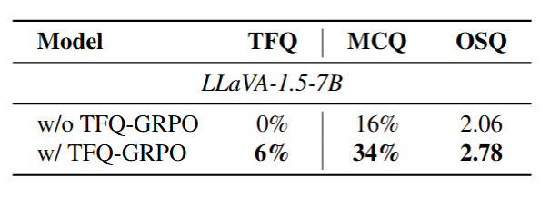
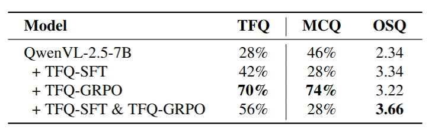

1Shanghai AI Laboratory
2Huazhong University of Science and Technology 3The Chinese University of Hong Kong MMLab
zhangchenhao@pjlab.org.cn niuyazhe314@outlook.com
Metaphorical comprehension in images remains a critical challenge for AI systems. While Multimodal Large Language Models (MLLMs) excel at basic VQA, they struggle with nuanced cultural, emotional, and contextual implications.
To address this, we propose MetaphorStar, the first end-to-end visual reinforcement learning (RL) framework for image implication tasks. Our framework introduces the TFQ (True-False Question) paradigm to convert subjective interpretations into verifiable binary judgments, enabling stable RL optimization.
Our open-source MetaphorStar family (3B, 7B, 32B), trained using TFQ-GRPO, achieves significant performance improvements and state-of-the-art results.
Standard Supervised Fine-Tuning (SFT) is insufficient for teaching this process.
We leverage Reinforcement Learning (RL) to optimize the reasoning process itself. However, applying RL to subjective visual interpretation is challenging due to the lack of "ground truth".
We solve this with the True-False Question (TFQ) Paradigm, which decomposes the single complex image metaphor problem into multiple rich TFQs across different levels:
Verifiable Binary Feedback: Converting subjective interpretations into verifiable True/False judgments with clear reward signals (\(r=1\) for correct, \(r=0\) for incorrect), enabling stable RL optimization.
Forced Reasoning: Requiring explicit Chain-of-Thought (CoT) reasoning within <think>...</think> tags.
Method
1. Why TFQ?
Current benchmarks like MCQ (Multiple-Choice Question) and OSQ (Open-Style Question) have limitations. MCQ is stable but medium-difficulty, while OSQ is hard but difficult to evaluate and optimize.
We introduce True-False Question (TFQ) as a fine-grained foundation because it offers:
Knowledge Density (⭐⭐⭐): 5-10 distinct propositions per image provide dense supervision.
Verifiability (⭐⭐⭐): Definitive True/False answers eliminate ambiguity and enable objective reward calculation (\(r=1\) or \(r=0\)), which is critical for RL stability.
2. TFQ-Data & TFQ-Bench
We construct a large-scale dataset leveraging 1,434 high-quality metaphorical images from II-Bench.
We ensure high quality through Human-in-the-loop Prompting with Expert-validated Ground-Truth Implication and high-quality, human-authored reference examples, which align the model’s outputs with human-logical constraints. We also manually verify the generated data.
Generation Pipeline & Design Principles:
Comprehensive Coverage: 5-10 QA pairs per image (Train: ~14k, Bench: ~14k), evaluating understanding of key content related to the central metaphor.
Beyond Implication: Questions probe not only the deep implication but also primary visual information (similar to basic VQA).
Hierarchical Difficulty: False statements are plausible distractors; True statements are clearly grounded in visual/contextual evidence.

Figure 1: Overview of TFQ-Data and TFQ-Bench splits. TFQ-Data-Full contains ~14k questions for training, while TFQ-Bench provides rigorous evaluation sets strictly disjoint from training data.
3. TFQ-GRPO: Visual Reinforcement Learning
TFQ-GRPO (Group Relative Policy Optimization for True-False Questions) is our specialized visual RL algorithm.
Structured Output Format: We enforce a strict structure separating reasoning from judgment:
<think> [reasoning] </think> <answer> [True/False] </answer>
Multi-Component Reward Function:
\[R_{\text{total}} = R_{\text{accuracy}} + \lambda_{\text{format}} \cdot R_{\text{format}}\]
Correctness is rewarded based on the binary answer, while format rewards ensure structural compliance.
Group Relative Optimization: We sample \(K\) diverse outputs for each question and optimize the policy based on the relative advantage of each output compared to the group average.
MetaphorStar Model Family
We introduce the MetaphorStar family, which comprises three sizes: 3B, 7B, and 32B. We utilize the QwenVL-2.5 series as the base model.
To gain insight into the internal reasoning mechanisms of our model, we analyze its token-level generation entropy. Figure 3 provides a visualization of this entropy as MetaphorStar-7B generates responses for the TFQ, MCQ, and OSQ tasks.

Figure 3: The visualization of token entropy for MetaphorStar-7B on TFQ, MCQ, and OSQ. High-entropy (red) indicates high uncertainty, while low-entropy (blue) indicates high confidence.
Our analysis reveals that high-entropy tokens, representing points of highest uncertainty for the model, are not randomly distributed. This aligns with recent findings that "high-entropy minority" of tokens is critical for complex reasoning. In the context of image implication, we observe that these spikes in uncertainty consistently occur at crucial semantic and logical junctions.
Specifically, the model exhibits high entropy when generating logical connectors (e.g., "therefore", "thus", "but") that pivot the argument or establish a causal link. We also note high entropy for key function words (e.g., "the", "is"), quantifiers, and pronouns, suggesting that the model's core cognitive effort is concentrated on making definitive logical leaps and structuring the relationship between concepts. Conversely, low-entropy (high-confidence) tokens are typically associated with reproducing factual details from the image or completing deterministic phrasal structures.
Experiments & Results
Main Results on Metaphor Benchmarks
State-of-the-Art Performance: MetaphorStar-32B achieves SOTA on all major benchmarks.
TFQ: We outperform Gemini-3.0-Pro, demonstrating superior discriminative visual reasoning. (TFQ evaluation uses a strict "all-or-nothing" metric: a sample is correct only if ALL questions for the image, e.g., 10/10, are answered correctly.)
MCQ: Our model surpasses open-source models and rivals closed-source giants.
OSQ: The rich reasoning patterns learned via RL transfer directly to generation tasks, producing deeper and more culturally aware interpretations.

Figure 2: Main performance comparison. MetaphorStar-32B outperforms Gemini-3.0-Pro on several metrics.
General Visual Reasoning
Does learning metaphor help general vision? YES.
We evaluated MetaphorStar on general benchmarks (MMBench, MathVista, MMVet). The results show that training on implication tasks improves valid performance on general complex reasoning tasks, suggesting that "Image Metaphor Understanding" serves as a high-level cognitive workout for MLLMs.

Figure 4: Performance on general vision benchmarks.
Ablation Study
We conduct comprehensive ablation studies to validate our design choices and understand the factors contributing to MetaphorStar's success. Our analysis covers four critical dimensions: model scale, data scale, architectural choices, and training strategies.
1. Model & Data Scaling
Model Parameter Scaling: We observed consistent performance gains scaling from 3B to 32B. Larger models benefit more significantly from the RL stage, showing emergent reasoning capabilities with longer CoT paths.

Figure 5: Model Parameter Scaling. We observed consistent performance gains scaling from 3B to 32B. Larger models benefit more significantly from the RL stage.
Training Data Scaling: Scaling TFQ-Data from 1k to 14k samples shows a log-linear improvement in reasoning accuracy. The diversity of the dataset (covering politics, art, humor) is crucial for preventing overfitting to specific visual styles.

Figure 6: Data Training Scaling. Scaling TFQ-Data from 1k to 14k samples shows a log-linear improvement in reasoning accuracy.
2. Different Model Architecture
We validated our framework across LLaVA architectures. TFQ-GRPO proves to be model-agnostic, consistently improving the reasoning baseline of different backbones.

Figure 7: Ablation on Different Model Architectures.
3. Different Training Strategy
We explore the impact of different training strategies by comparing three approaches: TFQ-SFT (SFT only), TFQ-SFT + TFQ-GRPO (SFT warmup + RL), and TFQ-GRPO (End-to-end RL).
Counterintuitively, SFT warmup actively harms performance. End-to-end RL (TFQ-GRPO) achieves best results on TFQ and MCQ. SFT-involving strategies cause catastrophic collapse on MCQ (46% → 28%), indicating severe generalization damage due to "SFT Curse" and entropy collapse.

Figure 8: Comparison of Different Training Strategies.
Discussion & Key Insights
The "SFT Curse" in Visual Metaphor Reasoning
Our analysis reveals a critical finding for reasoning-heavy visual tasks: SFT warmup is not only unnecessary but actively detrimental.
Entropy Collapse: Token entropy analysis shows that SFT causes severe entropy collapse (0.30) compared to the base model (1.33). This behavioral cloning traps the model in a narrow distribution, preventing it from exploring the broad solution space required for creative metaphor interpretation.
"Talker" vs. "Thinker": SFT teaches the model to mimic the output format ("Talker") but fails to instill discriminative logic ("Thinker").
Evaluation Bias: While SFT models may produce verbose outputs that bias LLM judges (inflating OSQ scores), they fail on objective discriminative benchmarks (TFQ/MCQ), indicating a illusion of competence.
Conclusion: End-to-end RL (TFQ-GRPO) leverages high initial entropy for global optimization, proving superior for open-ended reasoning tasks.
Conclusion
To conclude, we present MetaphorStar, a pioneering framework that introduces visual reinforcement learning to the domain of image metaphor understanding. By establishing the TFQ paradigm and the TFQ-GRPO algorithm, we successfully bridge the gap between subjective visual interpretation and objective RL optimization.
Our release includes the MetaphorStar model family, the large-scale TFQ-Data, and the rigorous TFQ-Bench.
Crucially, our findings demonstrate that learning to reason about metaphors serves as a high-level cognitive workout, enhancing general visual reasoning capabilities. We hope our open-source contribution will inspire further research into reasoning-based visual learning and the cognitive depths of MLLMs.
Citation
If you find our work helpful, please consider citing:
@article{zhang2026metaphorstar,
title = {{MetaphorStar}: Image Metaphor Understanding and Reasoning with End-to-End Visual Reinforcement Learning},
author = {Zhang, Chenhao and Niu, Yazhe and Li, Hongsheng},
journal = {arXiv preprint arXiv:2602.10575},
year = {2026}
}
Chenhao Zhang, Yazhe Niu, and Hongsheng Li. MetaphorStar: Image Metaphor Understanding and Reasoning with End-to-End Visual Reinforcement Learning. arXiv preprint arXiv:2602.10575, 2026.